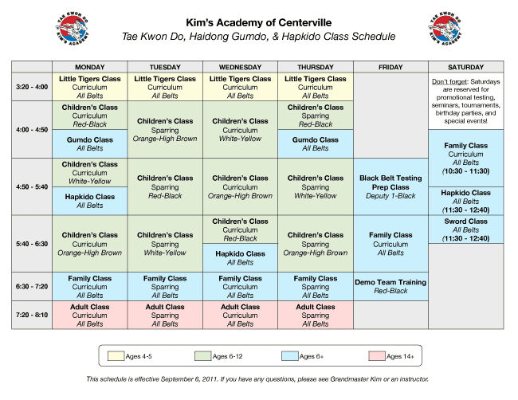

Straight to the Point Archery is a non profit archery education center founded in 2005 by Giap Nguyen. Our state of the art educational and training facility incorporates detailed technical video analysis combined with generations of archery experience from certified coaches and instructors.
Schedule



Straight to the Point Archery has instructors that are qualified level 1 and level 2 instructors and have met the safety requirements of the USA Archery (USAA). We teach in a positive learning environment. Our instructors also have extensive knowledge of the most advanced archery equipment and all forms of archery from the traditional long bow to the modern compound. Straight to the Point Archery also has specific instructors for recreational archery, competitive archery and bow hunting.